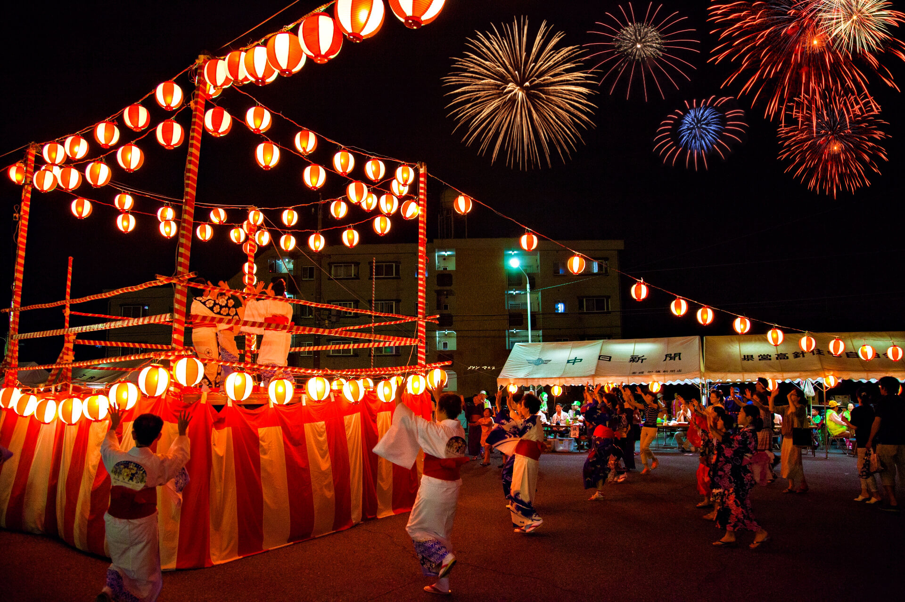
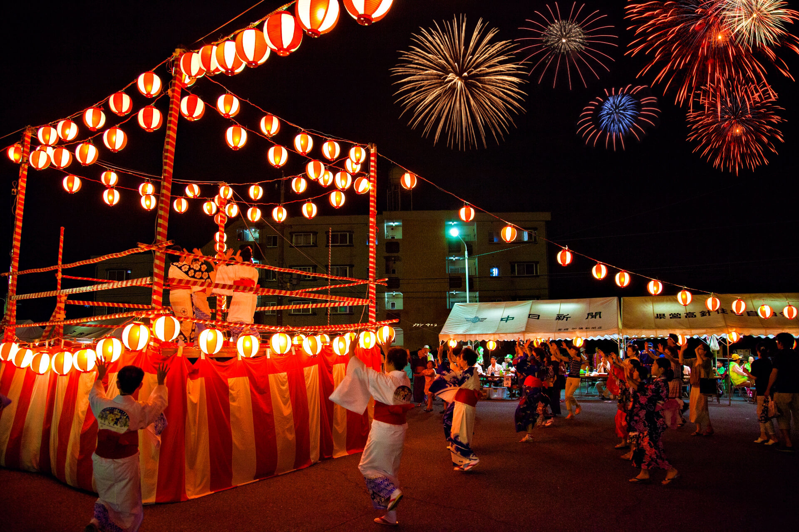

Culture of Japan
Japanese culture is a beautiful blend of tradition and modernity, characterized by art, cuisine, festivals, and customs.
From the elegant tea ceremonies to vibrant festivals, every aspect reflects Japan's rich history and values.
Immerse yourself in the art of calligraphy, the beauty of traditional kimono, and the serenity of Zen gardens.
Traditions and Festivals
Shinto and Buddhism: These two religions heavily influence Japanese culture, with many traditional practices, rituals, and festivals rooted in their beliefs. Shinto shrines and Buddhist temples are integral parts of community life.
Seasonal Festivals: Japan celebrates numerous festivals (matsuri) throughout the year, often linked to agriculture,
seasons, and historical events, such as Hanami (cherry blossom viewing) in spring and Tanabata (star festival) in summer.
Arts and Crafts
Traditional Arts: This includes tea ceremonies (chanoyu), calligraphy (shodō), ikebana (flower arranging),
and various forms of pottery and textile arts.
Performing Arts: Kabuki (classical theater), Noh (a form of musical drama), and Bunraku (puppet theater)
are significant traditional performing arts, each with unique styles and audiences.
Fashion
Traditional Clothing: Kimono, yukata (summer kimono), and hakama (trousers) are traditional garments
often worn during festivals and ceremonies.
Modern Fashion: Japan is known for its unique street fashion, particularly in districts like Harajuku,
showcasing individual expression and trends.
 
